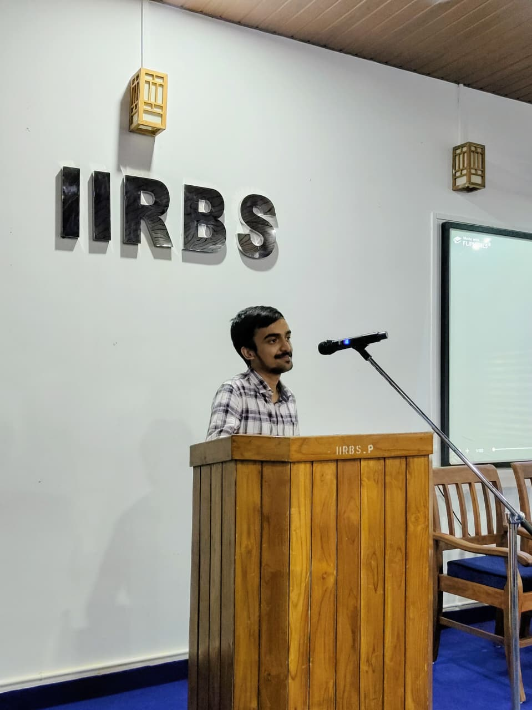
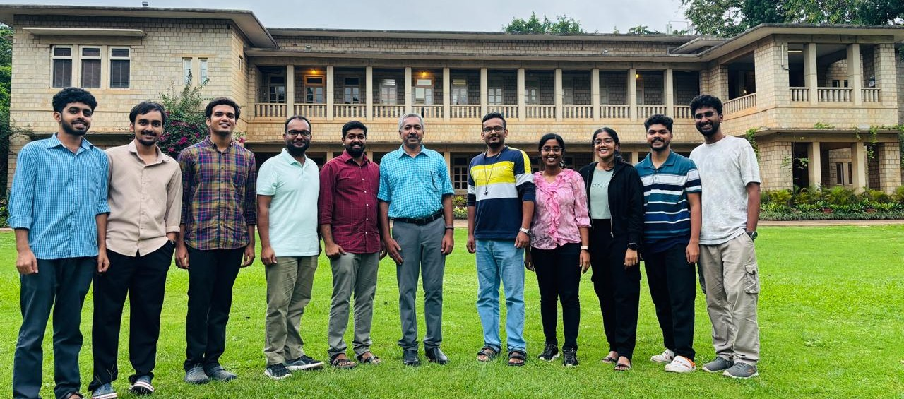
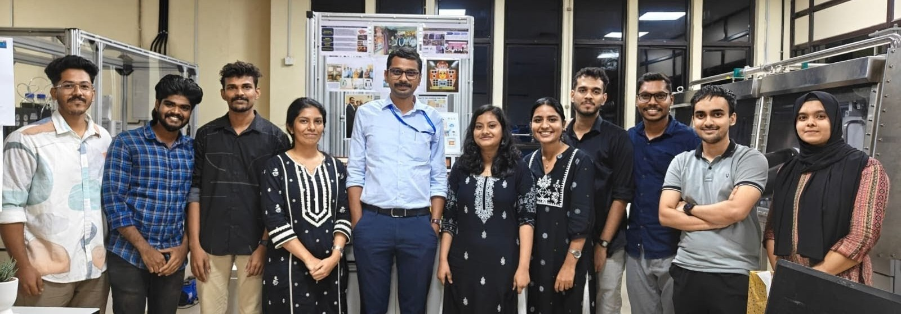

Hello! I'm Hemanth Jijo. I was born and raised in a small village in Kerala, India, where I spent my childhood observing the natural world with endless curiosity. Everyday phenomena such as the colours of the rainbow after rain, the formation of shadows, the sparkling night sky, and the motion of waves often left me wondering about the scientific principles behind them. Those early questions gradually developed into a fascination with understanding nature through logic, mathematics, and experimentation, eventually leading me to pursue Physics.
I completed my Integrated M.Sc. in Physics at the Institute for Integrated Programmes and Research in Basic Sciences (IIRBS), Mahatma Gandhi University. The interdisciplinary curriculum provided a strong foundation not only in Physics but also in Mathematics, Chemistry, Biosciences, Environmental Science, and Computer Science. As I progressed through the programme, I became increasingly fascinated by experimental research and the opportunities to explore fundamental questions through carefully designed experiments.

Delivering a talk during a Science Forum programme at Mahatma Gandhi University.
Beyond academics, I developed a deep interest in science communication. During my undergraduate years, our institute established the Science Forum, and I had the privilege of serving as its President. Together with fellow students, we organised lectures, outreach programmes, and discussions aimed at promoting scientific temper, encouraging critical thinking, and addressing pseudoscientific misconceptions. This experience strengthened my belief that science should not remain confined to laboratories but should also inspire and empower society.
For my Master's thesis, I joined the Laboratory for Attosecond SciencEs (LASE) at the Raman Research Institute, Bengaluru, as a Visiting Student under the supervision of Dr. N. Smijesh. My research focused on designing and implementing an interferometric system using femtosecond Ti:Sapphire and continuous-wave He–Ne laser systems to investigate the optical activity of chiral molecules. Working with ultrafast lasers and precision optical instrumentation introduced me to the fascinating field of photonics and reinforced my passion for experimental physics.

After exploring the interaction of ultrashort laser pulses with matter, I became interested in another important branch of photonics—the conversion of light into electrical energy. This curiosity naturally led me to my current research at CSIR–National Institute for Interdisciplinary Science and Technology (CSIR–NIIST), where I am working under the supervision of Dr. Suraj Soman. My work involves the fabrication and optimization of solution-processed perovskite solar cells. Although the application is different, both projects share a common theme: understanding and engineering the interaction between light and materials to develop advanced optical and energy technologies.

I continue to explore new ideas in photonics, semiconductor materials, and renewable energy technologies. As I move forward in my research journey, I hope to deepen my understanding of light–matter interactions and contribute to meaningful scientific discoveries through experimental research.